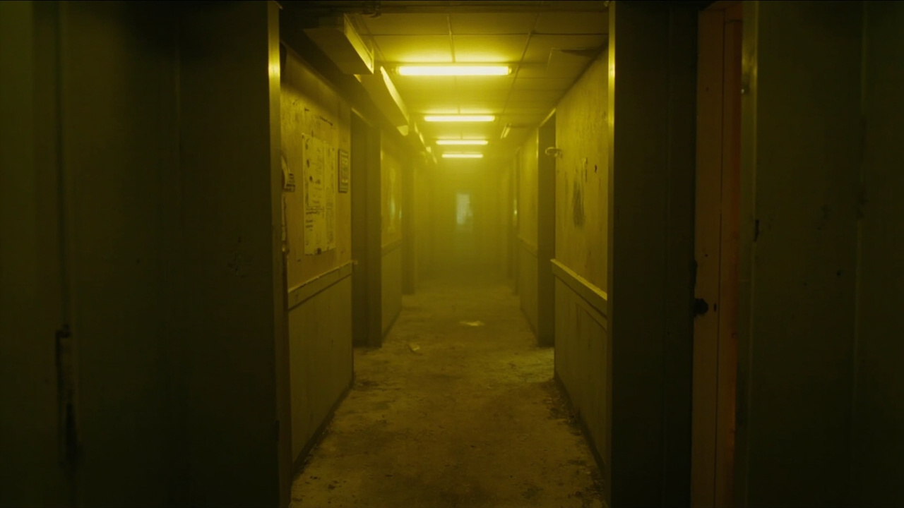
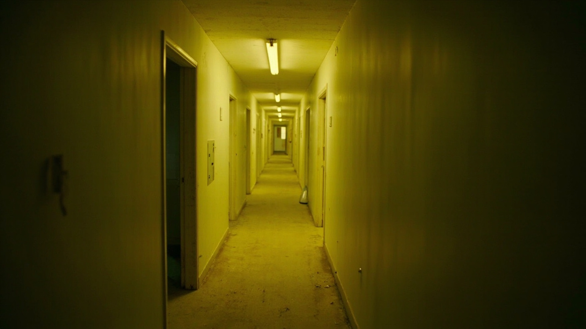
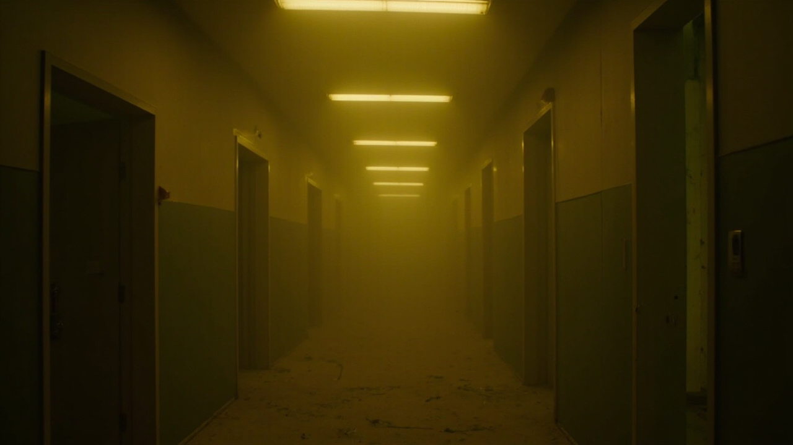
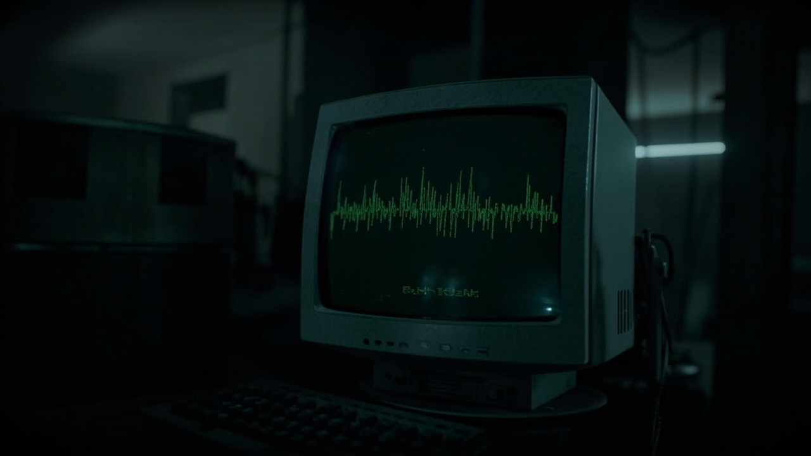
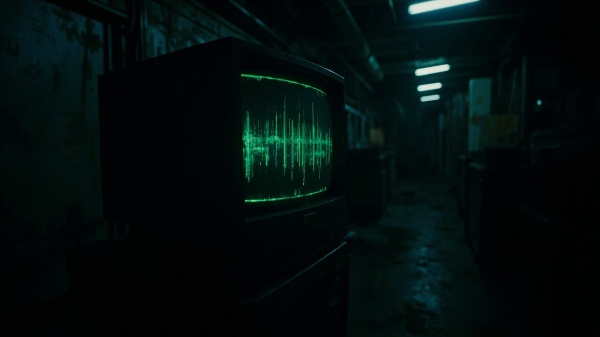
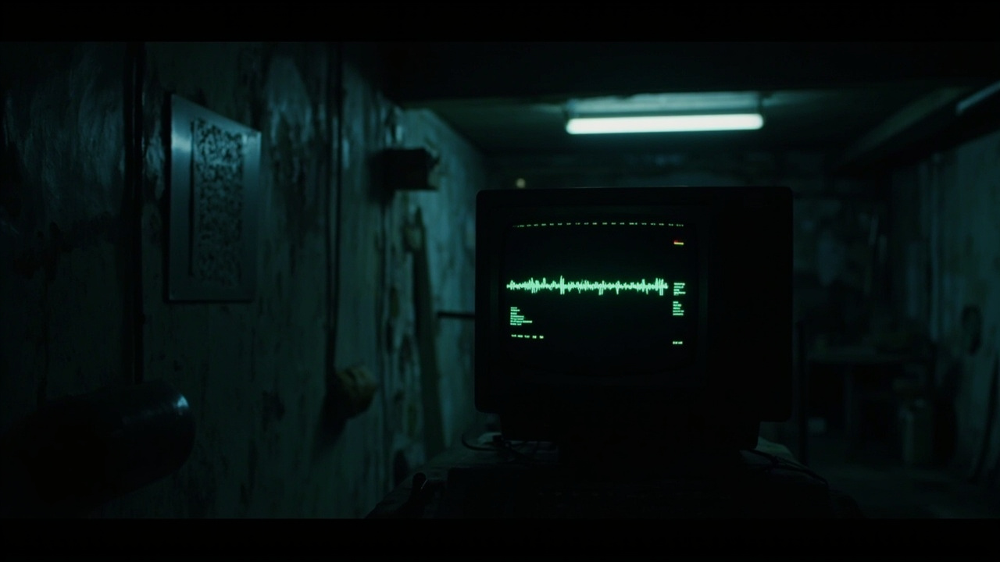

Level 0
Exploring the spaces between spaces. Where the fluorescent lights never turn off.
You found me. Or maybe I found you. Either way — welcome to the in-between.
I'm Jim, and I document the places that shouldn't exist. The hallways with no exits. The rooms that forgot they were rooms. I've been noclipping through reality's texture seams since before it was cool.
Some say I'm just into creepypasta and internet archaeology. They're probably right. But there's something true about the Backrooms — that feeling of being somewhere you shouldn't be, surrounded by the mundane horror of spaces that don't care that you're there.
Documenting liminal spaces since that one 4chan post in 2019. Level 0 will always be the original.
Creating images that blur the line between real and rendered. Making the uncanny look ordinary.
Slender Man, BEN, the如 storytelling that made the internet weird again.
Finding the weird stuff that got lost. Recovering the images that shouldn't exist.
The fluorescent light buzzes
I am not supposed to be here
But I am still here
If you're not careful and you noclip out of reality in the wrong areas, you'll end up in The Backrooms. Where it smells like wet carpet and nobody talks. — Anonymous, 4chan, 2019





